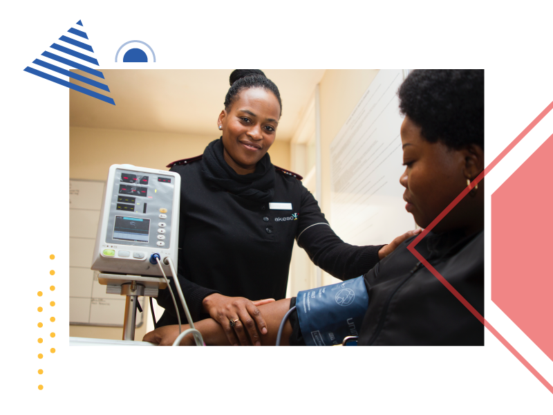
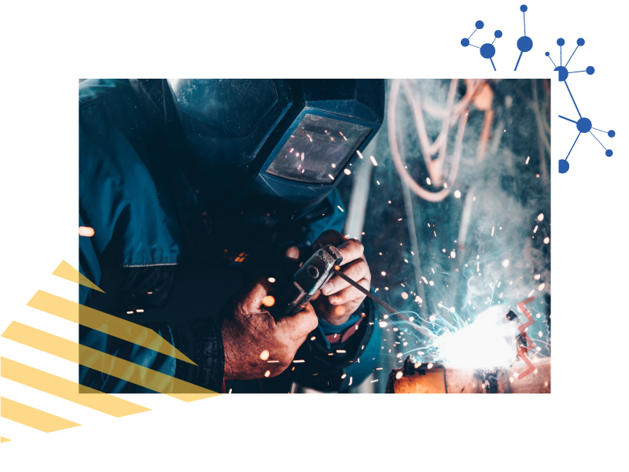
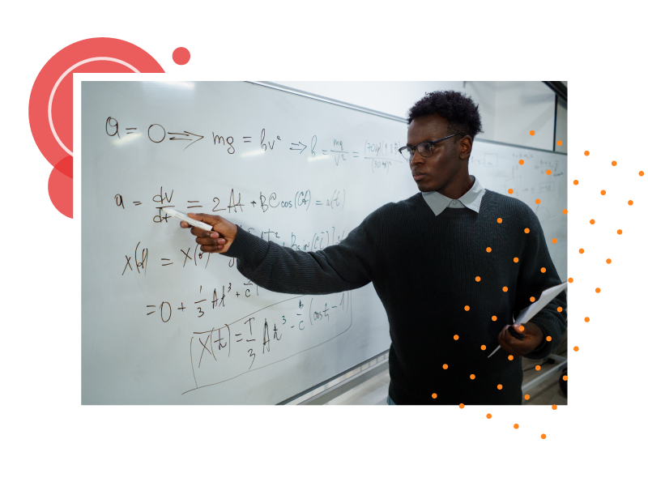

A técnica, como intervenção no mundo que acontece socialmente, constitui o laço social e está no coração da cultura. É elemento essencial do que chamamos de trabalho, que definimos aqui como exercício social da técnica.
É claro que o trabalho sempre foi visto, nas sociedades ocidentais, ora como dignificação, ora como penosa tortura. Na cultura brasileira, no entanto, “a balança que oscila entre o seu culto e a sua repulsa (...) pendeu demasiado a um dos lados” (MORAES, 2016, p. 87).
Assista ao vídeo a seguir e procure refletir sobre a construção histórica e cultural do conceito de técnica no Brasil.
Portanto, neste sentido amplo e existencial que estamos seguindo aqui, todos nós, qualquer que seja nosso trabalho, somos técnicos.

Figura 09 - Fonte: HushNaidoo/Unplash

Figura 10 - Fonte: Christopher Burns/Unplash

Figura 11 - Fonte: otton/Pexels